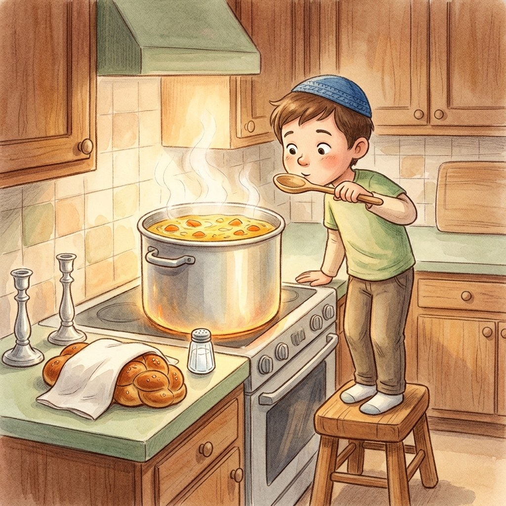

I've Got a Clue!
What Bracha Do We Make When We Only Taste?
About this episode: Ima asks Yedani to taste the Shabbos soup and check if it needs salt, and right then the Rav knocks on the door. Do we make a bracha on a taste? What do we do when we want to taste and swallow, too, and what bracha do we make when we eat or drink only to help something that got stuck in our throat go down?
0:00
--:--
We couldn't load the recording. Check your internet connection and try again.